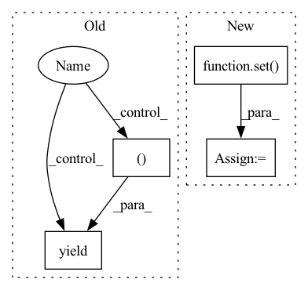

Pattern ID :20387
Before Change
for name,val in super().named_parameters(recurse=False):
yield name,val
if recurse :
for name,module in self.named_children():
kwargs = {"recurse": recurse}
if isinstance(module, Module):
kwargs["nnparam_only"] = nnparam_only
for varname,value in module.named_parameters(**kwargs):
fullname = "%s.%s" % (name,varname)
yield fullname, value
// for name,val in super().named_parameters(recurse=recurse):
// yield name,val
//////////////////////////////////// __*attr__ functions ////////////////////////////////////After Change
else:
return module.named_parameters(recurse=False)
memo = set() // set to make sure it returns unique parameters
modules = self.named_modules(prefix=prefix) if recurse else [(prefix, self)]
for module_prefix, module in modules:
members = get_members_fcn(module)In pattern: SUPERPATTERN
Frequency: 3
Non-data size: 4
Instances Fragment ID: 66038187
Project Name: xitorch/xitorch
Commit Name: 668d921120b4ccae59f193533c761c25d9b8b3f0
Time: 2020-08-04
Author: firman.kasim@gmail.com
File Name: comptorch/core/module.py
M Class Name: Module
N Class Name: Module
M Method Name: named_parameters(4)
N Method Name: named_parameters(3)
M Parent Class: torch.nn.Module
N Parent Class: torch.nn.Module
M File Name: comptorch/core/module.py
N File Name: comptorch/core/module.py
M Start Line: 30
M End Line: 49
N Start Line: 30
N End Line: 50
Before Change
confidences_indices_sorted = torch.argsort(
word.token_confidences[label_index], dim=-1, descending=True
)
for confidence_index in confidences_indices_sorted:
confidence_val: float = word.token_confidences[label_index][confidence_index].item()
bio_label = self.id2label[confidence_index.item()]
if bio_label == ENTITY_OUTSIDE_SYMBOL:
yield bio_label, None, confidence_val
else:
bio_label, class_label = bio_label.split("-")
yield bio_label, class_label, confidence_val
breakAfter Change
super().__init__(text, id2label)
def get_labels(self, word: TokenizedWord) -> Set[Tuple[str, Optional[str]]]:
bio_and_class_labels: Set[Tuple[str, Optional[str]]] = set()
token_confidences_sorted = torch.argsort(word.token_confidences, dim=1, descending=True)
for token_confidence in token_confidences_sorted:
confidence_index = token_confidence[0] Fragment ID: 66038214
Project Name: astrazeneca/kazu
Commit Name: 422eb2bceb9b3988a63113d66d19b1298220cec1
Time: 2022-11-30
Author: richard.jackson4@astrazeneca.com
File Name: kazu/steps/ner/tokenized_word_processor.py
M Class Name: SimpleSpanFinder
N Class Name: SimpleSpanFinder
M Method Name: get_labels(2)
N Method Name: get_labels(3)
M Parent Class: SpanFinder
N Parent Class: SpanFinder
M File Name: kazu/steps/ner/tokenized_word_processor.py
N File Name: kazu/steps/ner/tokenized_word_processor.py
M Start Line: 191
M End Line: 210
N Start Line: 167
N End Line: 189
Before Change
confidences_indices_sorted = torch.argsort(
word.token_confidences[label_index], dim=-1, descending=True
)
for confidence_index in confidences_indices_sorted:
confidence_val: float = word.token_confidences[label_index][confidence_index].item()
if self.threshold is not None:
if confidence_val > self.threshold:
bio_label = self.id2label[confidence_index.item()]
if bio_label == ENTITY_OUTSIDE_SYMBOL:
yield bio_label, None, confidence_val
else:
bio_label, class_label = bio_label.split("-")
yield bio_label, class_label, confidence_val
else:
break
else:
bio_label = self.id2label[confidence_index.item()]After Change
self.id2label = id2label
def get_labels(self, word: TokenizedWord) -> Set[Tuple[str, Optional[str]]]:
bio_and_class_labels: Set[Tuple[str, Optional[str]]] = set()
token_confidences_sorted = torch.argsort(word.token_confidences, dim=1, descending=True)
for i, token_confidence_indices in enumerate(token_confidences_sorted):
for confidence_index in token_confidence_indices: Fragment ID: 66038211
Project Name: astrazeneca/kazu
Commit Name: 422eb2bceb9b3988a63113d66d19b1298220cec1
Time: 2022-11-30
Author: richard.jackson4@astrazeneca.com
File Name: kazu/steps/ner/tokenized_word_processor.py
M Class Name: SmartSpanFinder
N Class Name: SmartSpanFinder
M Method Name: get_labels(2)
N Method Name: get_labels(3)
M Parent Class: SpanFinder
N Parent Class: SpanFinder
M File Name: kazu/steps/ner/tokenized_word_processor.py
N File Name: kazu/steps/ner/tokenized_word_processor.py
M Start Line: 279
M End Line: 312
N Start Line: 246
N End Line: 272